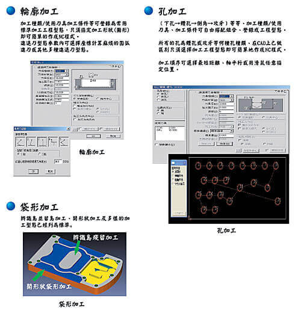
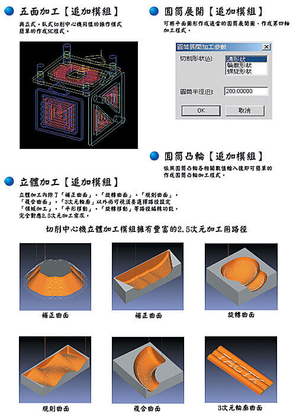
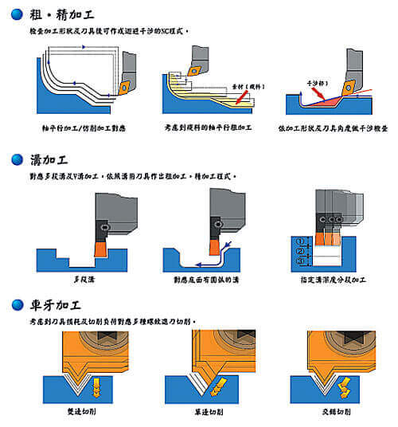
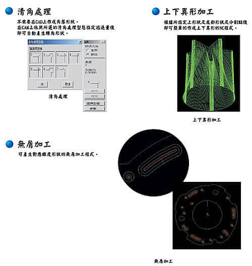

WinMAX
日本CAD/CAM系統WinMAX軟體全新介面WinMAX V4
Solution已經全部上線，除了支援更新的 圖形讀取介面(DWG支援至AutoCAD
2015)、更增加了很多客戶期待已久的功能。您是WinMAX的舊客戶嗎？
是不是很期待新版本的軟體？趕快跟我們連絡吧！
CAD功能
● 以CAM加工為導向用加工現場思考模式所產生的2次元CAD

讀圖介面
輸入：AutoCAD(DWG)、DXF、IGES(2D)、WinMAX、T.CAD
輸出：DXF、IGES(2D)、WinMAX
2D銑床模組
● 2次元加工只有真正必要的功能CAM系統
● 登錄刀具條件、工程型態、固定格式不斷累積您的加工經驗
● 直接列印加工程表，讓您現場加工沒有距離

銑床追加模組

車床模組
● 支援FANUC/OSP固定循環指令

線切割模組
